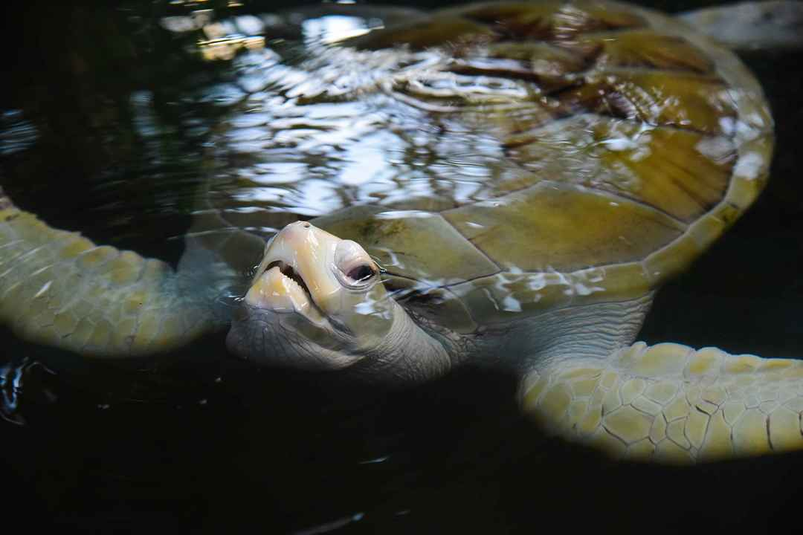

It is just one of many turtle hatcheries in the southern coast of the island. Initially starting as a community project to help protect the biodiversity of the southern coast, it is now a fully-fledged hatchery and rescue centre with dedicated teams that work round the clock to study, care and protect several turtle species
They are working towards restoring the populations and educate both locals and tourists. The turtles eggs are being watched over, and eventually the baby turtles are released back into the ocean when they are ready.
The injured turtles at the hatchery are followed up by veterinarians. Some can be missing a fin or have open wounds. Adult turtles are at the hatchery to be rehabilitated before being put back into the ocean.
Going to the center is a great educational opportunity and allows you to get up close to the turtles without disturbing their habitat. The eggs har secured behind a netting so birds can not access them. Once the eggs hatch, the baby turtles are placed in a tank until they are ready to be released into the ocean. You are able to release turtles back into the ocean for an additional fee.
By attending the center you are making an important contribution to the restoration of these endangered species.

Turtle farm in Hikkaduwa or Sea Turtle Hatchery & Rescue Center is a small and yet a very nice turtle farm and rescue center. Here visitors may see turtle eggs which are safely buried in the sand hatchery. It usually takes two days for eggs to hatch. Turtles are held really gently with great attention to their proper development so that they can later be safely released into the sea where they can live in their natural habitat. This is the reason why here visitors can see turtles in many different sizes; turtles need to grow in order to be released and continue living on their own.
Regrettably, visitors will also be able to see turtles with mutilated bodily parts sadly, for instance without forelegs or hind legs . This bodily harm is normally afflicted by boat engines. Once they lose one of their limbs, turtles get off balance and it takes quite some time till they recover in order to have full body command the same as prior to the accident. This is why this farm is also considered to be a unique shelter that helps disabled turtles to find their body balance and sustain their lives.
Many turtles died, in previous decades, because they inadvertently swallowed plastic bags, thinking that those were jelly fish. Sri Lankan government has recently imposed severe measures against those who discard plastic bags into the ocean. The measures actually worked and there has been a decline in the number of turtles that died this way as of recent.
Turtle farm in Hikkaduwa is also a place where one can see the turtles, get to know them but also learn a lot about these divine animals.
The guides actually raise awareness of the importance of sea life and all beings that live inside it.
Ticket price for a turtle farm in Hikkaduwa
The ticket price for a turtle farm in Hikkaduwa is 500 LRK per person.
Working hours for a turtle farm in Hikkaduwa
The Turtle farm in Hikkaduwa is open every day from 9:00am to 6:00 pm
**Remember: 📸NO flash! And do not disturb the baby turtles on their way to the sea!
Conclusion
The sea turtle hatchery is a nice place to visit if you’re in Hikkaduwa. The turtles are an amazing sight and it’s a special treat if you’re an animal lover. Fun fact: it’s a family-run conservation hatchery. It was first set up by a man named Ariyapala, and passed down to his daughter who tragically lost her life in the tsunami of 2004, after which Ariyapala’s son took over and rebuilt the hatchery with foreign aid.